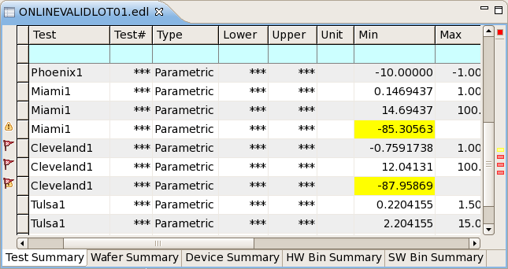

Test summary tab
The test summary tab of the data navigation view for a data store shows the consolidated results for the tests in the data store, displaying basic statistical evaluations for all executions of a particular test.
In addition to the columns describing each test, a test summary tab contains configurable fail and alert marks in the left and right margins, and it has a shortcut menu. All three elements are described below.
Table
The table in a test summary tab displays a summary for all executions of a particular test in each row. Clicking any field in a row selects the entire row (for example, for copying it).
The topmost row in the table (with a cyan background) is the table filter that lets you restrict which rows are displayed in the table by entering conditions. See Table filter for details.
A test summary table can display these columns:
- Test Suite: The test suite name.
- Test Method: The test method name.
- Test: The test name as specified by the TESTSET.testname() function.
- Test#: The test number.
- Type: The type of the test - parametric, functional, shmoo, or unknown.
- Pattern Name: The name of the pattern used in the test.
- Wafer: The number of the wafer on which the device is located.
- Site: The number of the site to which the device belongs.
- Pin: The name of the tested pin.
- Lower: The lower limit that was specified for the test.
- Upper: The upper limit that was specified for the test.
- Unit: The unit for the measured value.
- Min: The lowest value that was measured in the tests summarized in a row.
- Max: The highest value that was measured in the tests summarized in a row.
- Mean: The mean of all values that were measured in the tests summarized in a row.
- Sdev: The standard deviation of the values measured for the test that is summarized in a row.
- Cp: The Cp index of the values measured for the test that is summarized in a row.
- Cpk: The Cpk index of the values measured for the test that is summarized in a row.
- Cpl: The Cpl index of the values measured for the test that is summarized in a row.
- Cpu: The Cpu index of the values measured for the test that is summarized in a row.
- Device#: The number of devices tested by the tests summarized in a row.
- Pass#: The number of devices that have passed the tests summarized in a row.
- Pass%: The percentage of devices that have passed the tests
summarized in a row.
This percentage is also shown graphically in the cell by a horizontal green bar. For example, if one third of all devices pass, the left third of the cell is green and the rest has a normal background.
- Fail#: The number of devices that have failed the tests summarized in a row.
- Fail%: The percentage of devices that have failed the tests
summarized in a row.
This percentage is also shown graphically in the cell by a horizontal red bar. For example, if two thirds of all devices fail, the left two thirds of the cell are red and the rest has a normal background.
- Time: The execution time of the test. (Due to algorithmic overhead, this number may not be the exact actual execution time.)
- TS Time: The execution time of the test suite. (Due to algorithmic overhead, this number may not be the exact actual execution time.)
Which columns are displayed and the order in which they are displayed can be set in the preferences.
If the test summary tab is part of a correlation view, additional columns are displayed. See Correlation data store structure for more information.
Clicking a column title sort the table by this column in ascending order (rows with
smaller values come first). This is indicated by a triangle  . Clicking again sorts the table by the column in descending order, which is indicated by
an upside-down triangle
. Clicking again sorts the table by the column in descending order, which is indicated by
an upside-down triangle  . Clicking again unsorts the table. (The rows are displayed in the order in which they
occur in the data store.)
. Clicking again unsorts the table. (The rows are displayed in the order in which they
occur in the data store.)
Marks in the annotation and overview rulers
The left and right margins of the tab contain indicators for failed tests, alerts you have defined, and other special conditions.
The annotation ruler (the left margin) contains icons indicating rows with fails, exclusions and alerts:
 The test summarized in this row failed for at least one device.
The test summarized in this row failed for at least one device. This row contains a cell with an alert.
This row contains a cell with an alert.- Data records for this test have been excluded in the raw data view. (See Excluding data from evaluation for details.)
- The test summarized in this row contains a shmoo hole.
- When a row is marked by multiple icons, these icons overlap.
Pointing to an icon displays a tooltip with additional information such as fail and alarm counts.
You can disable the different icon categories in the Annotations preference page. By default, all are enabled.
The overview ruler (right margin) contains a small colored rectangle for each row with a failed device and each row with an alert. Clicking a rectangle selects the corresponding row in the table. Hovering over a rectangle with the mouse displays a tooltip with the reason for the alert. Hovering over the small colored square in the upper right corner of the view displays a tooltip with the total numbers of failed rows, rows containing excluded data sets, and rows with alerts.
You can choose the colors in the Annotations preference page and disable any kind of indicator. By default, indicators are red for fails, blue for exclusions, yellow for alerts, and cyan for shmoo holes; all kinds are enabled.
For more information on configuring fail indicators and alerts, see Highlighting specific data.
Shortcut menu
The shortcut menu of a test summary tab contains these commands:
- Refresh: Updates the system data log stream
display with the latest logged data when it is paused (see below), but does not turn on
automatic updating again, like Resume does.
This command is available only when the system data log stream is displayed in the tab.
- Pause: Stops automatic updating of tables
displaying the system data log stream.
This command is available only when the system data log stream is displayed in the tab.
- Resume: Restarts automatic updating of the
system data log stream.
This command is available only when the system data log stream is displayed in the tab.
- Clear: Removes all current entries from the system data log
stream display in the Integrated Result Tool and clears the system event stream.
This command is available only when the system data log stream is displayed in the tab.
- Save and Clear: Displays a standard Save dialog in which you
can save the current system event stream as an EDL file. After you have saved the file, all
current entries from the system data log stream display in the Integrated Result Tool are
removed and the system event stream is cleared.
This command is available only when the system data log stream is displayed in the tab.
- Open Definition: Opens the Testflow Tool and displays the definition
of the test being summarized in the selected row.
This requires the testflow to be loaded in SmarTest.
- Open Test Limit: Opens the Testflow Tool and displays the test limits
of the test being summarized in the selected row.
This requires the testflow to be loaded in SmarTest. If the testflow uses test tables, the test table is opened and the appropriate row is highlighted. If it does not use test tables, the Tests page is opened and the row highlighted.
- Show In: The commands in this submenu lets you display the selected rows in one of these result graphs and tables:
- Auto Update Chart: This command toggles whether any charts showing
data from the data log stream are dynamically updated when new data log entries are created in
the stream.
By default, these dynamic updates are deactivated. You can enable them to have the charts change automatically as new events are generated. However, when the data log stream contains a large number of entries, performance may suffer.
This command is available only when the system data log stream is displayed in the tab. It does not affect the automatic update of any chart views when different rows are selected in the test summary tab.
- Exclude: This submenu lets you specify which records to exclude from
the evaluation of the data store and display in the summary tabs. Records that you exclude in
this tab are also excluded in other tabs.
- Pass: Excludes all test summaries that contain only passed tests.
- Fail: Excludes all test summaries that contain at least one failed test.
- None: No test are excluded. If there are any exclusions currently in effect, they are ended.
- Filter: This submenu contains the Show Similar
command, which lets you restrict the display in the tab to only those rows that have the same
test suite and test names as the selected test summary.
Note that this command is a shortcut for entering the test suite and test names in the table filter row at the top of the table. To show all rows again, click at the very left of the table filter row (which clears all filters).
- Width: This submenu includes the Autofit command that lets you make each column just wide enough to show all of its contents.
- Group By: This commands in this submenu lets you group the displayed
summaries by wafer, site, or pin.
This means that, instead of displaying one row per test summary, SmarTest displays one row per wafer, site, or pin for each test. It also displays the corresponding columns (see below).
You can group by multiple categories. In that case, SmarTest displays one row for each combination of categories per test (for example, for each combination of test, wafer, and site).
If the display is already grouped by a category, choosing the corresponding command from the submenu again removes the grouping.
These commands are available:
- Wafer: Groups the rows in the tab by wafer and displays the Wafer column (see above).
- Site: Groups the rows in the tab by site and displays the Site column (see above).
- Pin: Groups the rows in the tab by pin and displays the Pin column (see above).
- Yield Calculator: Opens the Yield Calculator, which lets you calculate yields from limits.
- Cpk Limit Calculator: Opens the Cpk and limit calculator, which lets you calculate Cpk values from limits or vice versa.
- Copy: Copies the selected rows to the clipboard as tab-separated text.
- Alerts: Opens the Alerts preference page.
- Preferences: Opens the Test Summary preference page.
Example

Functional changes
- Introduced in SmarTest 7.2.0
- SmarTest 7.2.1: Open Test Limit now selects the appropriate row.
- SmarTest 7.2.1: Renamed some columns.
- SmarTest 7.2.1: Test summaries with excluded rows or shmoo holes are now indicated.
- SmarTest 7.2.2: Added menu command for yield calculator.
- SmarTest 7.2.2: Added Pattern Name column.
- SmarTest 7.2.2: Added Save and Clear shortcut menu command.
- SmarTest 7.2.2: The Clear shortcut menu command now also clears system event stream.
- SmarTest 7.2.3: Added option to enable or disable dynamic updates for system data log stream charts.
- SmarTest 7.50: Added alarm count in tooltip.